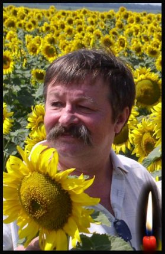

 Дмитро Дмитрович Кремінь (21.08.1953 – 25.05.3019)
{kind=link}
{kind=link}
Світлана Іщенко-Торнтон (Канада)
Дмитро Кремінь. Портрет. Посмертно
Відсахнулися, Дмитрику, усі твої літа і зими,
як під гуцульською барткою,
і сніг пелюстків з травневих дерев
у вусах посів.
Застигла посмішка під ними.
Розбіглися від неї річки і ставки, як по мапі країни,
не зморшками, а глибокими долями тих,
кого осяяла усміхнена полонина твого обличчя.
Бескид перебитого носу
залив червоним жаревом
вуста південного степу,
а трембіти брів підвелися у безодню космосу.
Чорне море вибухнуло спресованими роками спротиву,
і твоє волосся позичило колір моря –
молодий
серед тіней забутих предків. Назавжди.
Соняшники проросли на вишиванці
крізь серце
і повернули серце до Сонця,
а зірки сузір’я Лева
споглядають на Атлантиду під вербою
твоїми очима і виплакують
людяність. (25 травня 2019 р.)
Dmytro Kremin — A Portrait
All your summers and winters, Dmytro, have been hewed away
as with a Hutsul axe.
The petals of May trees
have settled in your moustache like snow,
and your smile is frozen
not within wrinkles but within waters travelling out
as rivers and ponds on a country map
and carrying the deep destinies
of those who have been inspired by the polonyna,
the sunlit mountain valley of your face.
The beskid, the Carpathian cliff of your broken nose —
the blood that ran from it during militia fights
now fills the mouth of the southern steppe
with warm, red evening light;
the trembitas of your eyebrows rise in an endless cosmos.
The Black Sea has exploded
with all its decades of resisting suppression,
and your hair has borrowed the colour of the sea,
and you are a young man again
among the shadows of the forgotten ancestors — forever.
Now sunflowers grow out of your heart
and lift through your embroidered shirt
and turn that heart to face the sun;
the stars of the Leo constellation
look with your eyes
onto Atlantis Under a Willow Tree
and cry out your humanity. (May 25, 2019)
Svetlana Ischenko
«Чорна субота»
Розверзлося, на землю впало, небо потоками гірких, невтішних сліз – довкілля у мінорі править требу, природа публікує прес-реліз…
Сумує Миколаїв, Україна, в журі схились літні й молоді, ридає ридма, тужить вся родина – пішов з життя письменник, батько, дід…
Та музика з-за мурів не стихає й Господнє літо скоро, вже за мить*, і «Скрипка з того берега» лунає, й «Лампада над Синюхою» горить! 25.05.2019 * Маються на увазі збірки Дмитра Кременя «Замурована музика» і «Літо Господнє».
Кремінь чи діамант? Видатній людині і письменнику – Дмитру Кременю, з нагоди 65-річчя
З юнацьких літ пішов у світ картатий – писав, навчався… Хоч і не ван Гог, з дипломом все ж путівку за Карпати з Вуж-города отримав педагог.
Казанка, Миколаїв, школа, діти, редакції журналів і газет… Із Музою мандруючи по світу, зростав невпинно молодий поет.
Постала в височінь „Травнева арка“ й „Південним сяйвом“ вкрилася вона. „Танок вогню“ змінила досить шпарко „Елегія троянського вина“
У „Літній час“ шукав він „Шлях по зорях“, з „Синопсисом“ на вепра полював*, ще й „Пектораль“ купав у Чорнім морі та „Скіфське золото“ в „Літопис“ нотував…
Доробки творчі всі перелічити не вистачає пальців на руках – перлинами покликані зорити поезії всесвітньої в віках.
Таких людей в суспільстві одиниці, вони за шахом завше ставлять мат. З бурштину журавель** він, не синиця. Людина-кремінь, глиба, діамант! 29.08.2018 * Йдеться про збірку ювіляра „Полювання на дикого вепра“ (2006). ** Мається на увазі збірка Дмитра Кременя „Бурштиновий журавель“ (1997).
Памяти Дмитра Креминя
Вернуть бы мне хотя бы на мгновенье
Поистине бесценные часы,
Когда поэт читал юнцов «творенья»,
Улыбку пряча в пышные усы.
Не осуждая, раздавал кредиты
Частенько незаслуженных похвал
И нас «мої літературні діти»
С любовью неизменной называл…
Мы постигали творчества основы
В его стихах, что будут жить века,
А он дарил тепло души и слова
И красоту родного языка.
«Пишіть, бо ви – поезії надія…»
Подумать страшно, сколько лет прошло!
Нас дуновенье славного «Борвія»
Поставило на крепкое крыло…
И вот стою, как в страшном сне, у гроба,
Мечтая тщетно только об одном:
«Молю тебя, Всевышний, сделай чтобы
Прощанье оказалось просто сном!!!»
Но придавила плечи горя глыба…
Рыдает ливнем злополучный май…
Поэт, учитель, друг, за всё – СПАСИБО!!!
Я просто не могу сказать: «Прощай!» 7.07.219 г.
Анатолій Золотухін “На 40 днів…”
Він дивиться на нас як ми сумуємо, Ніхто з Аїду ще не зміг втекти – Христос Воскрес! Молю я, Алілуя! У Рай Небесний, Господи, впусти!.. 03.07.2019 р.
Акровірш ДМИТРО Кіммерії Ольвійській Дим, Розмова з Богом на Парнасі, Єллін і дикопільский Див, Месія Гіпполаю на Пегасі ІНЬ у житті та Ян у Часі 29.07.1999 р.
Яблука Гесперід Д. Креміню
Коли ти на дорогу яблука давав, Воно було і яблуком пізнання, І пам’ятю. На разі пригадав Один Геракла подвиг, із останніх… Згадав як жили ми у Вавілоні, Ти був тоді Сагіль-кіна-уббіб. А я в семірамідовім полоні Вже рими їв твої, як хліб… І час той відійшов, Семіраміда нам на лихо Голубкою злетіла на той світ, Аж доки я в Гомері не знайшов Тебе на службі Псамметіха. І саме там, в далекому Єгипті, Із Гільгамеша виплинув Геракл, Хоч не було вже на цім світі Садів, висячих на горах. І там, мій брате, Діоскур-Гомер, Ім’я знайшов у “Битії” Мойсея. О мрії, молодості сфер, Як служба у Паріса-Еврістея. Згайдаймо, як питали ми Нерея, Де причаївся Сад той Гесперід?! О, як він не хотів розкрити тайну, Приймаючі різноманітний вид, А ми трималися, аж доки він негайно На землю рідну нам не указав, Назвавші край гіпербореїв, І то була ріднесенька Гілея, Тепер Кінбурном хтось її назвав…
Тече у Понт Дніпро, як Океан, І яблука ростуть під оком Феба, І батько Гесперід, титан Атлант, В Криму тримає на раменах небо. А в Миколаєві Гомеровім – Аїд, Життя тримається на римі, Допоки квітне Сад наш Гесперід, Ми будьмо вічно молодими. 12.01.2004 р.
Александр Поляков “Поэт в бессмертие уходит” Светлой памяти Д. Креминя
Люд Николаева скорбит, В душе печаль как ночи темень, Ведь мир покинул наш пиит – Непревзойдённый Дмитрий Креминь.
Отчизны сын, наперсник муз, Отец духовный для народа. Стихи его – волшебный блюз Что в унисон звучит с природой.
Народ его боготворил, За совершенство благозвучий. Привнёс красу он, мощь ветрил В язык наш сладостно-певучий,
И эхо горное Карпат Смог описать и ветра свисты, А в Буг, в Мигейский водопад Вкрапил палитру пейзажиста.
Обогащая рифмой речь, Поднял её на высь Парнаса, Веля язык родной беречь От сора, бед, дурного глаза.
Господь к себе призвал творца, Иным отдав юдоль земную, Но тень лаврового венца Оставил гений нам былую.
В тени приятно этой нам Внимать стихам великолепным, И открывать сердца словам Крылатым, чувственным, заветным.
Шедеврам гения дано Стать достоянием Отчизны. Всевышним всё предрешено: Поэт идёт в бессмертье с тризны! 27. 06. 2019 г.
***
Харон, твоя ладья не очень и комфортна –
Ни тёплых одеял, ни крепких стюардесс.
Помахивай шестом у вытертого борта –
Ни голубых небес, а ни ночных небес.
Река себе течёт – божественная клятва.
Билет в один конец, обол за перевоз.
А бормотанье душ прозрачно и невнятно.
Ни золотых колец, ни крепких папирос.
Харон, я дам с лихвой – и золота, и меди,
Молчи, не говори, не место здесь словам –
Когда поэт Дмытро в твоей ладье поедет –
Перевези его
К Блаженным островам. 31.05.2019 г.
Вечір пам’яті Великого Поета України 26 травня 2019 р. Пушкінського клубу і “Просвіти” дивиться ТУТ.